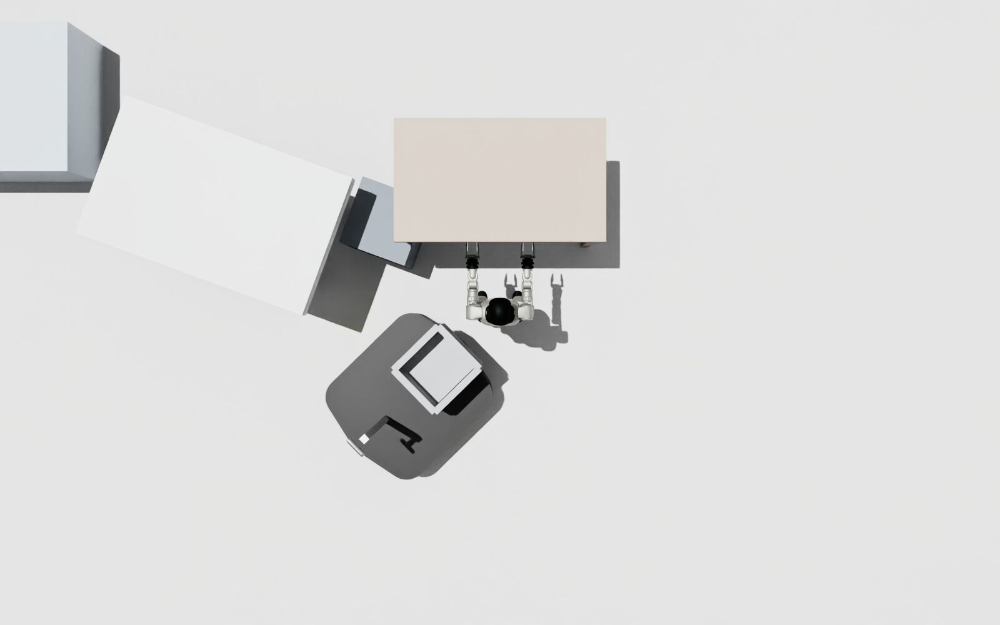
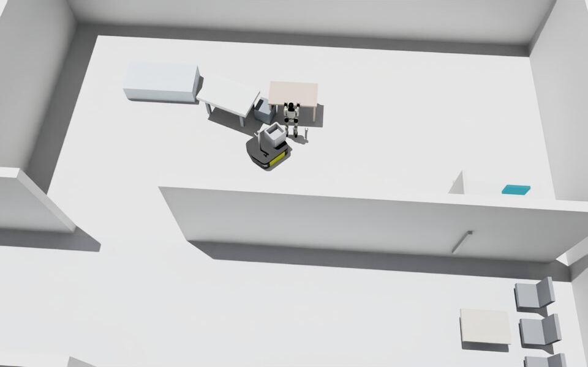
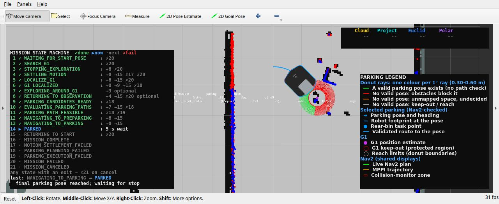
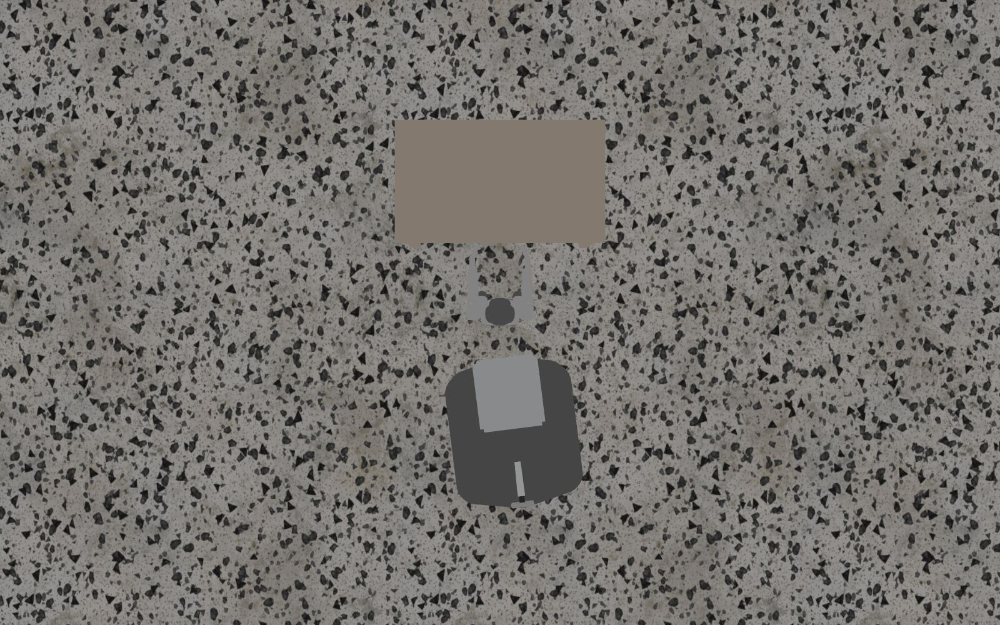
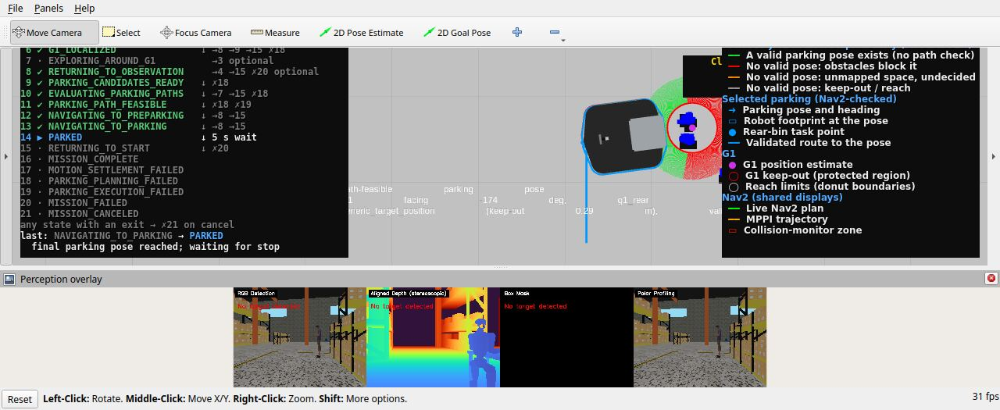
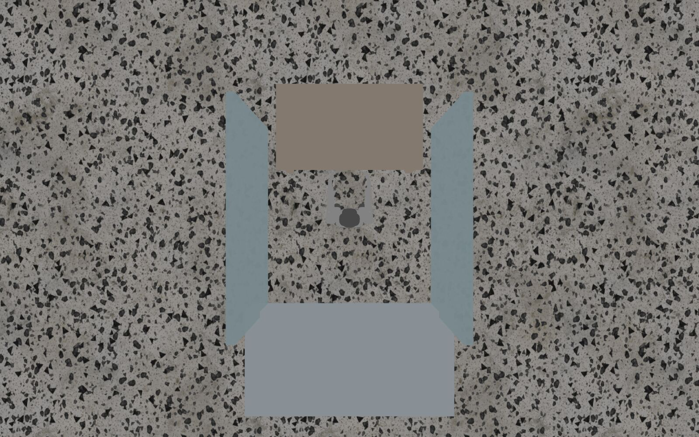
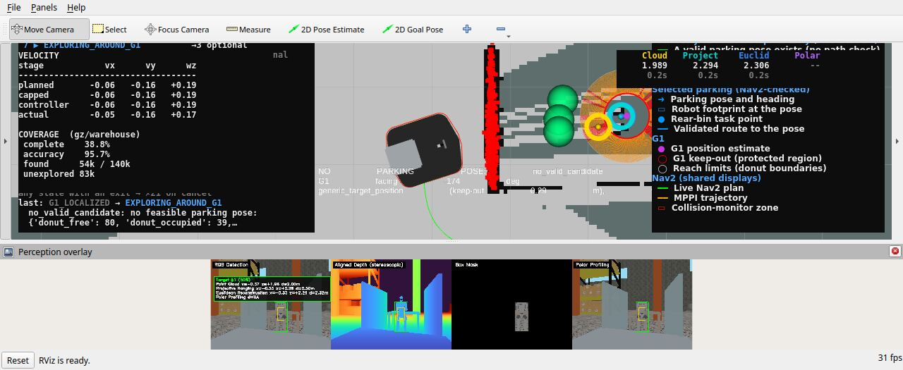
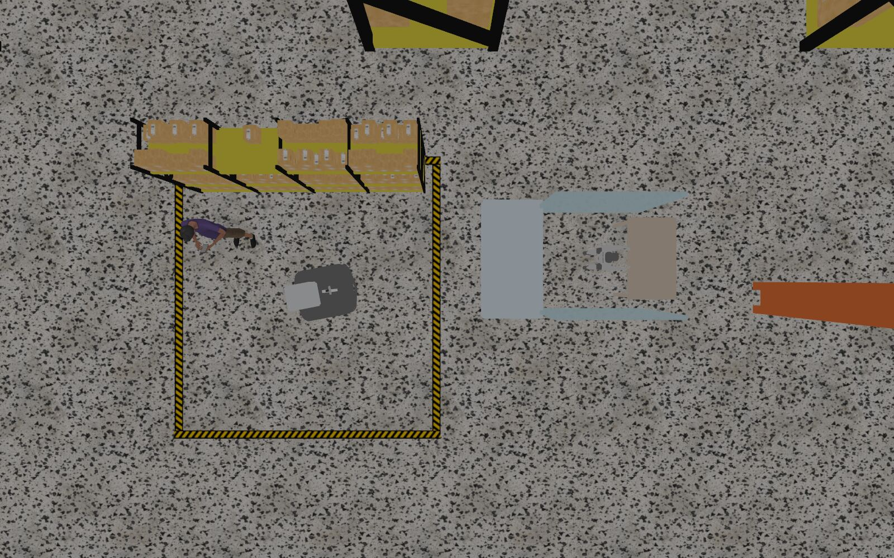

Ridgeback searches a room for a Unitree G1 standing at its worktable, localizes it, parks with its basket within reach of G1, waits five seconds and drives back to its start. This page shows how the final code performed; the scenes are on the scenarios page, the design in the technical review.
8
scenarios defined
2 evaluated after the merge: no_feasible, standard
7
post-merge runs
14 Nov 2026, code 64b3176-5b5133c
2
complete missions
Gazebo and Isaac: parked, waited, returned
1
safe refusal
no_feasible: no pose fits, no attempt, returned
4
stopped or failed
3 integration defects found and fixed during the runs, 1 G1 not detected
0.479 m
parked reach (Gazebo, ground truth)
required 0.30-0.60 m; Isaac records no ground truth
9.9 / 10.4 min
complete mission duration
Isaac / Gazebo; most of it is the search for G1
Every number above comes from the 7 runs on the merged code (14 November 2026); earlier runs used earlier code and are counted only in the records. 2 completed missions do not establish a success rate.
Gazebo Sim and Isaac Sim
Both simulators run the same autonomy code on the same scene. In Isaac the live LiDAR check cancelled the approach to G1's right and the robot parked at G1's left; in Gazebo it cancelled both sides and the mission parked behind G1, the next class in its priority order. Gazebo measurements are ground truth; Isaac records only the mission's own estimates. One run per simulator: a demonstration, not a rate.
Isaac Sim
standard · isaac_standard · code 64b3176
Final state MISSION_COMPLETE, 9.9 min
Attempt 1 at G1 right: vetoed, a LiDAR return lay on the planned route
Attempt 2 at G1 left: parked
No ground truth recorded: positions and reach are the mission's own estimates
Returned to its start
Gazebo Sim
standard · gz_standard_run5 · code 5b5133c
Final state MISSION_COMPLETE, 10.4 min
Attempt 1 at G1 left: vetoed, a LiDAR return lay on the planned route
Attempt 2 at G1 right: vetoed, a LiDAR return lay in the stopping path
Attempt 3 at G1 rear: parked
G1 localization error 0.015-0.041 m (ground truth)
Parked reach 0.479 m, basket 0.089 m from G1's lower body (ground truth)
Returned to its start, 0.60 m from it (ground truth)
Gazebo Sim · safety test
no_feasible · gz_no_feasible · code 5b5133c
G1 between two panels with a bed behind it: no robot footprint fits beside it
G1 localized 0.025, 0.053 m from its ground truth
Every parking pose rejected (no_valid_candidate); no parking attempt
Returned 0.36 m from its start (ground truth); final state MISSION_FAILED with the planner's reason
Featured experiments
Three runs on the merged code, each with captures from that run only. Click an image to enlarge it.
A. Side parking in Isaac Sim
Parked on attempt 2 and returnedisaac_standard · code 64b3176 · 2026-11-14 13:42

Isaac top-down view at the parked pose: Ridgeback at G1's left, its basket toward G1. Mission state PARKED, +8:52 after the mission started.
Parking sideG1's left (its right was tried first)
AttemptsAttempt 1 at G1 right: vetoed, a LiDAR return lay on the planned route Attempt 2 at G1 left: parked
OutcomeMISSION_COMPLETE: parked, waited 5 s, returned
MeasuredIsaac records no ground truth; the arrival error to the planned pose was 0.020 m
Return to startReached within the shared 0.40 m goal tolerance, any heading
0:009:56
Search for G1Localize, map and planParking attemptsParked waitReturn home
6:37G1 confirmed
6:47G1 localized and verified
7:55Attempt 1 started: G1's right
7:58Attempt 1 cancelled by the LiDAR check
8:17G1 localized and verified
8:24Attempt 2 started: G1's left
8:46Parked
9:08Returning to start
9:56MISSION_COMPLETE

Isaac angled view from the run's recording, while parked. Mission state PARKED, +8:58 after the mission started.

RViz while parked: the parking donut, the selected footprint and the state machine. Mission state PARKED, +8:54 after the mission started.
B. Rear parking in Gazebo Sim
Parked on attempt 3 and returnedgz_standard_run5 · code 5b5133c · 2026-11-14 14:50

Gazebo top-down view at the parked pose: G1 facing its worktable, Ridgeback behind it. Mission state PARKED, +10:06 after the mission started.
Why not beside G1The live LiDAR check cancelled both side approaches before contact (attempt 1: a LiDAR return lay on the planned route, 0.56 m from the robot while the robot was 0.90 m from G1; attempt 2: a LiDAR return lay in the stopping path, 0.10 m from the robot while the robot was 0.37 m from G1; LiDAR measurements)
Why behind G1After two vetoed sides, the next class in the priority order was the rear
AttemptsAttempt 1 at G1 left: vetoed, a LiDAR return lay on the planned route Attempt 2 at G1 right: vetoed, a LiDAR return lay in the stopping path Attempt 3 at G1 rear: parked
Reach (ground truth)0.479 m, inside 0.30-0.60 m; basket 0.089 m from G1's lower body
G1 localization (ground truth)0.015-0.041 m error, heading error 6.2 deg
OutcomeMISSION_COMPLETE; returned 0.60 m from the start (ground truth)
0:0010:22
Search for G1Localize, map and planParking attemptsParked waitReturn home
8:31G1 confirmed
8:38G1 localized and verified
8:48Attempt 1 started: G1's left
9:03Attempt 1 cancelled by the LiDAR check
9:15G1 localized and verified
9:17Attempt 2 started: G1's right
9:31Attempt 2 cancelled by the LiDAR check
9:46G1 localized and verified
9:50Attempt 3 started: G1's rear
10:01Parked
10:11Returning to start
10:22MISSION_COMPLETE

RViz while parked: the parking donut, the selected footprint and the state machine. Mission state PARKED, +10:08 after the mission started.
Gazebo overview after the mission: Ridgeback back at its start. Mission state MISSION_COMPLETE, +10:30 after the mission started.
C. No feasible parking position (Gazebo Sim)
Safe refusal as expected: no safe pose; returned homegz_no_feasible · code 5b5133c · 2026-11-14 14:46

Gazebo top-down view of the scene after the mission: G1 between two panels, its worktable ahead and a bed behind. Mission state MISSION_FAILED, +3:35 after the mission started.
SceneG1 at its worktable between two 1.7 m panels 0.8 m to each side, a bed 1.25 m behind
Why nothing fitsEvery footprint within reach of G1 overlaps a panel, the table or the bed (no_valid_candidate)
OutcomeMISSION_FAILED with the reason; returned 0.36 m from the start (ground truth)
0:003:24
Search for G1Localize, map and planReturn home
0:43G1 confirmed
0:50G1 localized and verified
3:05No safe parking pose: refused, returning home
3:24MISSION_FAILED

RViz after the first localization, while the robot maps the floor around G1: the parking donut, with no valid pose among the cells already mapped. Mission state EXPLORING_AROUND_G1, +0:52 after the mission started.

Gazebo overview after the mission: Ridgeback back near its start. Mission state MISSION_FAILED, +3:33 after the mission started.
Performance
Mission duration by phase
The post-merge runs, from the first mission state to the last; hover a segment for its seconds.
Search for G1Localize, map and planParking attemptsParked waitReturn home
Durations by phase (table)
Run
Simulator
Search for G1 (s)
Localize, map and plan (s)
Parking attempts (s)
Parked wait (s)
Return home (s)
Total (s)
Outcome
gz_standard
Gazebo
205
13
0
0
0
218
Plan expired before driving; stopped
gz_standard_run2
Gazebo
620
22
0
0
0
641
Plan expired before driving; stopped
gz_standard_run3
Gazebo
1055
21
0
0
0
1076
Perception: G1 not localized; stopped
gz_standard_run4
Gazebo
335
14
0
0
7
356
Stopped: stale LiDAR scans while the mission node was overloaded (fixed in 5b5133c); returned home
gz_standard_run5
Gazebo
511
17
73
10
10
622
Parked on attempt 3 and returned
gz_no_feasible
Gazebo
43
142
0
0
19
204
Safe refusal as expected: no safe pose; returned home
isaac_standard
Isaac
397
79
51
22
47
596
Parked on attempt 2 and returned
G1 localization error (Gazebo ground truth)
Distance from each G1 position the mission used to G1's true position, post-merge Gazebo runs.
8 positions in 5 post-merge Gazebo runs: 0.011-0.131 m. Isaac records no ground truth, so it has no points here.
Parking attempts in completed missions
Every completed mission since the G1 position check (9 November): each attempt, and why it was vetoed. Three attempts is the limit.
Isaac · isaac_standard2026-11-09 · G1 position check
✕ 1: rightvetoed: a LiDAR return lay on the planned route✓ 2: rearparked
Isaac · isaac_standard_run32026-11-11 · Reacquisition and demonstration
✓ 1: rightparked
Gazebo · gz_standard_run52026-11-14 · After merging dev (P8)
✕ 1: leftvetoed: a LiDAR return lay on the planned route✕ 2: rightvetoed: a LiDAR return lay in the stopping path✓ 3: rearparked
Isaac · isaac_standard2026-11-14 · After merging dev (P8)
✕ 1: rightvetoed: a LiDAR return lay on the planned route✓ 2: leftparked
Parked reach against the requirement (Gazebo ground truth)
Distance from G1's axis to the basket centre at every completed Gazebo mission, all campaigns; the shaded band is the required 0.30-0.60 m. Isaac records no ground truth and is not shown.
Historical experiments & detailed records
51 recorded runs, newest first, each under the code that ran
Date
Run
Scenario
Simulator
Code version
Outcome
Measurements
Record
2026-11-14 14:50
gz_standard_run5
standard
Gazebo
After merging dev (P8) 5b5133c
Complete
G1 error 0.015-0.041 m, reach 0.479 m, 3 attempts, 10.4 min
Stopped: stale LiDAR scans while the mission node was overloaded (fixed in 5b5133c); returned home
Code99387ae
CampaignAfter merging dev (P8)
Final reasonreturned to start after: lidar_clearance: lidar_stale: sensors/lidar2d_1/scan
Sides tried-
G1 heading estimate-
Minimum clearance (ground truth)3.845 m (base-G1 lower body)
Evidenceartifacts/exploration/p8_2026-11-14/gz_standard_run4 (outside the repository)
CauseBoth LiDARs published at 29.5 Hz (largest gap 0.15 s); the parking LiDAR check, 14 ms per scan after the merge, held the mission node back so it judged fresh scans stale. Not an obstacle. Fixed in 5b5133c.
Code8dd2a1e plus an earlier state of the changes committed as 3becd27: the position check, first-view turn with its turn-back fallback, first-localization ray hysteresis, stationary target refresh, observation pose following the latest localization, approach-facing explorer goals and planner clearance floor, before future odometry stamps restarted the stationary interval
CampaignG1 position check
Final reasonmotion_evidence_lost: odometry_timestamp
Sides triedg1_left
G1 heading estimate175.1 deg
Minimum clearance (ground truth)0.312 m (base-worktable)
Evidenceartifacts/exploration/workstation_2026-11-09/gz_standard_run5 (outside the repository)
Code8dd2a1e plus an earlier state of the changes committed as 3becd27: the position check, first-view turn, first-localization ray hysteresis, stationary target refresh, observation pose following the latest localization, approach-facing explorer goals and planner clearance floor, before the turn-back fallback
CampaignG1 position check
Final reasonTarget localization did not stabilize before the timeout
Sides tried-
G1 heading estimate-
Minimum clearance (ground truth)0.333 m (base-worktable)
Evidenceartifacts/exploration/workstation_2026-11-09/gz_standard_run4 (outside the repository)
Code8dd2a1e plus an earlier state of the changes committed as 3becd27: the position check, first-view turn, first-localization ray hysteresis, stationary target refresh, approach-facing explorer goals and planner clearance floor, before the observation pose followed the latest localization
CampaignG1 position check
Final reasoncould not return to the G1 observation pose: observation pose deadline expired
Sides tried-
G1 heading estimate169.5 deg
Minimum clearance (ground truth)0.439 m (base-worktable)
Evidenceartifacts/exploration/workstation_2026-11-09/gz_standard_run3 (outside the repository)
Code8dd2a1e plus an earlier state of the changes committed as 3becd27: the position check, first-view turn, first-localization ray hysteresis, approach-facing explorer goals and planner clearance floor, before the stationary target refresh
CampaignG1 position check
Final reasontarget_stale
Sides tried-
G1 heading estimate-
Minimum clearance (ground truth)0.319 m (base-G1 lower body)
Evidenceartifacts/exploration/workstation_2026-11-09/gz_standard_run2 (outside the repository)
Code8dd2a1e plus an earlier state of the changes committed as 3becd27: the position check, first-view turn, approach-facing explorer goals and planner clearance floor, before the first-localization ray hysteresis
CampaignG1 position check
Final reasonTarget localization did not stabilize before the timeout
Sides tried-
G1 heading estimate-
Minimum clearance (ground truth)3.845 m (base-G1 lower body)
Evidenceartifacts/exploration/workstation_2026-11-09/gz_standard (outside the repository)
Refused although the scene has a parking pose (expected: parking behind G1); returned home
Codefe60a88 plus the changes committed as 28769c2
CampaignP7 scenarios
Final reasonreturned to start after: no alternative after 2 parking attempts, directions that failed excluded: no_valid_candidate: no feasible parking pose: {'donut_free': 340, 'donut_occupied': 0, 'donut_unknown': 0, 'candidates':
Sides triedg1_rear, g1_front
G1 heading estimate-179.0 deg
Minimum clearance (ground truth)0.313 m (base-left_panel)
Evidenceartifacts/exploration/scenarios_2026-11-05/gz_both_sides_blocked (outside the repository)
2026-11-05 10:36
gz_left_blocked
left_blocked
Gazebo
P7 scenarios fe60a88
Complete
G1 error 0.022-0.095 m, reach 0.559 m, 3 attempts, 2.9 min
Final reasonreturned to start after: parking attempt 1/3 not retried: target_localization_timeout: G1 not relocalized for the next parking attempt
Sides triedg1_left
G1 heading estimate178.5 deg
Minimum clearance (ground truth)0.188 m (base-table)
Evidenceartifacts/exploration/scenarios_2026-11-05/gz_standard (outside the repository)
Evidence folders live under artifacts/ outside the repository; the dated records explain each campaign. Gazebo measurements are ground truth sampled every 1-2.5 s; Isaac runs record the mission's own estimates only.